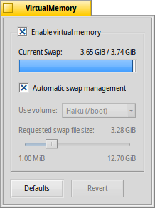

VirtualMemory
VirtualMemory
| Deskbar: | ||
| Position: | /boot/system/preferences/VirtualMemory | |
| Inställningar: | ~/config/settings/kernel/drivers/virtual_memory ~/config/settings/VM_data - Lagrar panelens fönsterposition. |
Virtuellt minne låter systemet temporärt lägga ut data på hårddisken om RAM-minnet kan utnyttjas bättre till något annat. Så även om du har massor av RAM är det aldrig en dålig idé att avsätta virtuellt minne.
Normalt lagras den temporära filen på din startpartition. If you're running low on free memory there, you can deactivate the and choose another mounted partition from the popup menu. The swap file size is set with the slider below.
Om du ofta råkar ut för att hårddisken rasslar långa stunder när systemet för virtuellt minne skriver och läser data kan du prova att använda en separat hårddisk till den temporära filen. Det räcker inte att bara använda en annan partition på samma hårddisk. Att uppgradera RAM-minnet är självklart den mest effektiva lösningen.
| återställer allt till standardinställningarna. | ||
| ställer tillbaka inställningarna som de var när du startade intällningarna för VirtualMemory. |